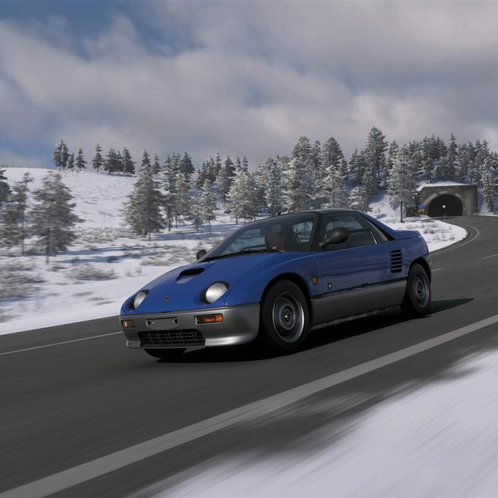

01Weekly Challenge5 очков
AutoZOOM
Условие: Последовательно на 1993 Autozam AZ-1: сесть за руль, потратить 25 000 CR на улучшения, удерживать скорость не ниже 120 mph (193 км/ч) в течение 10 секунд и выиграть любую Touge Race. Награда: 25 000 CR.
Как выполнить: Для второго этапа поставьте замену двигателя 1.6L I4 Turbo Rally — она стоит ровно 25 000 CR. Скорость проще удерживать на автомагистрали. Для финала подойдут Bandai Azuma в A-классе или Arashiyama Takao в S2-классе; сначала завершите Modern Marvels, если машины ещё нет.
Автомобиль и тюнинг: 1993 Autozam AZ-1 A700 — 828 279 003 (свежий код сообщества; не подтверждён в игре).